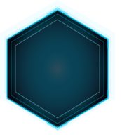

Sentinel orchestrates ZAP, Nuclei & 100+ AI models to scan,
triage, and auto-patch your vulnerabilities — one command.
npm install -g sentinel-security
Orchestrates OWASP ZAP active/passive scans with Nuclei templates. Covers SQLi, XSS, SSRF, RCE, IDOR, misconfigurations, outdated headers and CVEs — concurrently.
Powered by OpenRouter — switch between GPT-4o, Claude, Gemini, Llama or local Ollama via a single env variable. No API juggling required.
sentinel chat modeRecommended for development & CI environments.
npm install -g sentinel-securityContainerized deployment with full environment isolation.
docker pull virajsawant06/sentinelDirect access to the core engine and custom plugins.
git clone github.com/Virajsawant06/Major_project